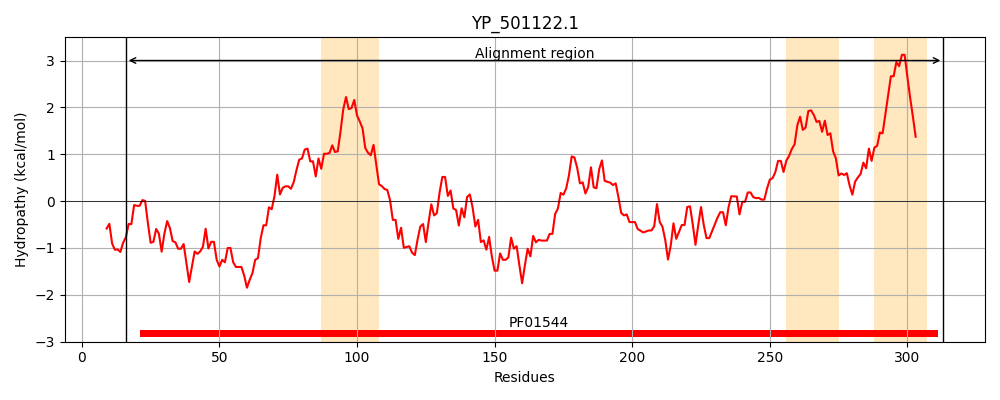
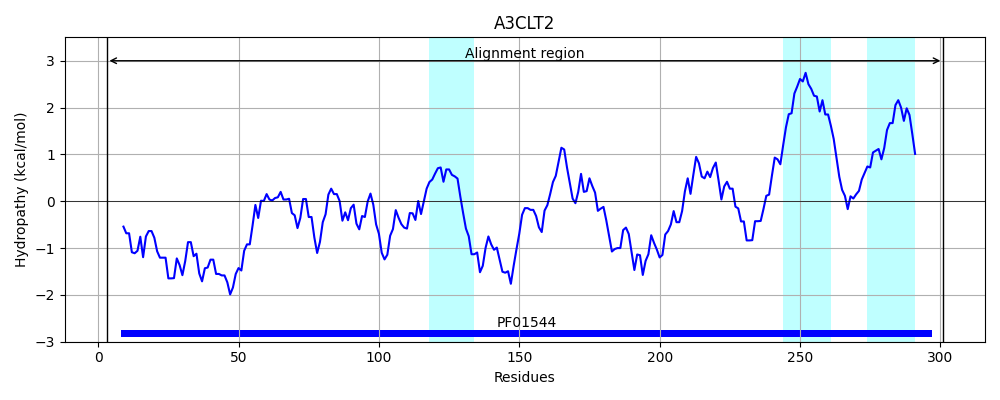
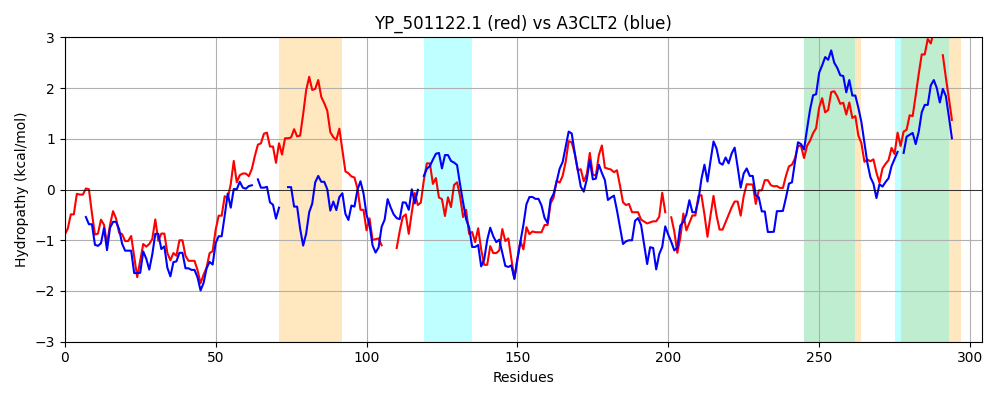

Hit Accession: A3CLT2
Hit TCID: 1.A.35.3.4
Hit Description: gnl|BL_ORD_ID|312 gnl|TC-DB|A3CLT2|1.A.35.3.4 Cation transporter CorA family, putative OS=Streptococcus sanguinis (strain SK36) GN=SSA_0701 PE=4 SV=1
Mach Len: 304
e:0.000000
Query TMS Count : 3
Hit TMS Count: 3
TMS-Overlap Score: 1.750000
Predicted Substrates:CHEBI:6635;magnesium(2+)
BLAST Alignment:
Score: 320 , Bit scores: 127 bits, E-value: 9.1e-35, Alignment length: 304, Percentage identity: 27
Query: 16 IKTPLDHTASWINVVEPDREEIENLMEQYNIPEDFIRDPLDSEESSRIEYDEDTGYSLIIIDLPIVNSTNRSVLSFVTIPLGIIIGNGIIVTVCDAENEFLENLPK----RDINLKFHSRFALEILTTIADHYNRNLRLLNKSRIRIEKELKNNITNKQLFKLMEVEKSLVYFLAALKGNDTIIKKLFRLPAIKRFEEDE-ELLEDLIIENNQAIETTELHQRILESITTSYASLLSNDMNTIMKTLTLFTVLLTLPTLVFSFFGMNVPLPIDDHSYISWIIVVGISLIL-VVIVSIFLWRKQK 313
++ L + WIN+ ++ + + Y I ++ I LD E + ++Y+ + G + I ++ + +T++ + TIP+ ++ ++T+ + +N ++ ++ K R + + +F L I++ Y + ++K + I L+ T K LF L ++E S+VY +AA K N +++ + +RF+E E E ED +IE Q + T+L ++L ++ SY ++L+N++N + LT+ +VLL + ++ FFGMNVPLP+ + +WI +V ISLI+ ++ + W K
Sbjct: 3 LERKLKDQSVWINIDSDSFKKNARIYQDYEIDKETIEYALDKNERAHMDYNRENGTVVFIYNV-LNLATDKE--HYETIPMTFVVQQRRLITISNQDNAYVVDMMKAYTERHEPVSVY-KFLFASLELISNSYYPVVERMDKRKDEINALLRQTTTKKHLFALSDLETSMVYLVAAAKQNRMLLEHIKSHGIYRRFDELETEQFEDAMIEARQLVSMTDLIAQVLSQLSGSYNNILNNNLNDNLTVLTIISVLLAVLAVITGFFGMNVPLPLSNDKN-AWIYIVVISLIIWGLLTKLLKWLANK 301 | Protein Hydropathy Plots: |
|---|
|  |  |
Pairwise Alignment-Hydropathy Plot:
|
|---|
|  |